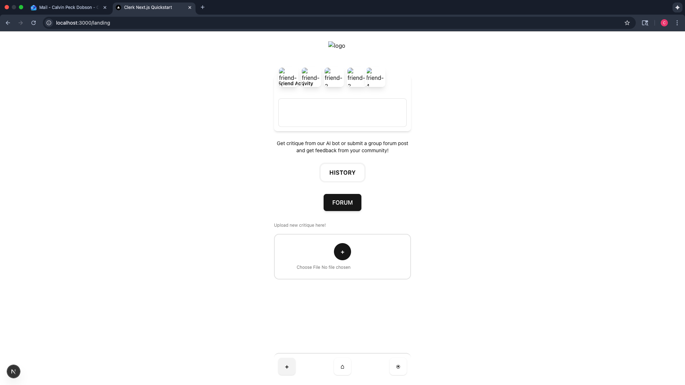
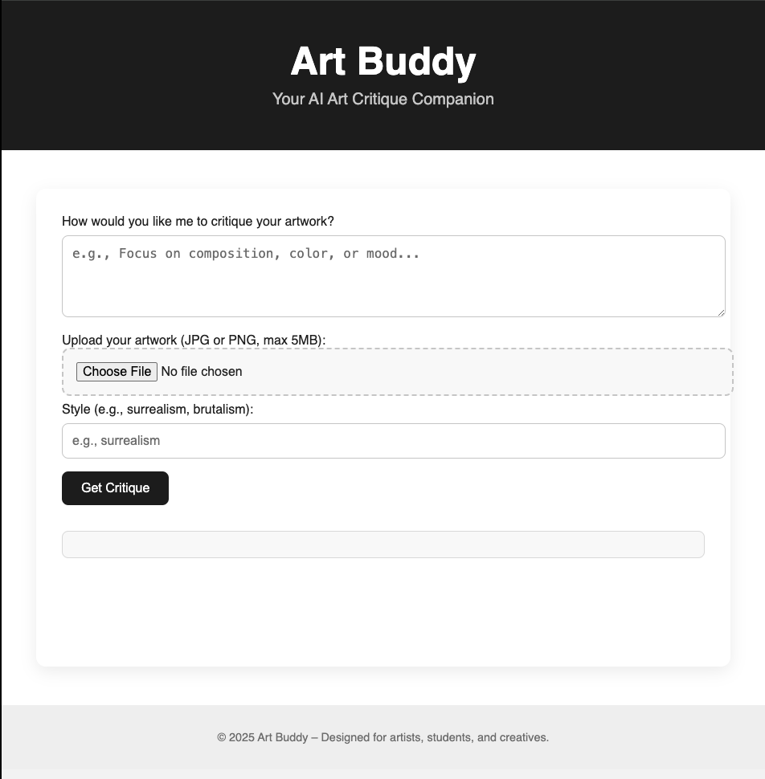

Personal project, 2025 – now
Art Buddy, AI critique for artists
Artists upload a piece and get feedback on composition, color and technique in seconds instead of waiting days for a peer review. It started as a ChatGPT embed on GitHub Pages with a Google Cloud Functions backend. I'm now rebuilding it in Next.js as a social space where art students post work, follow each other, and get critique.
Built with Next.js, OpenAI Vision API, Clerk, Google Cloud Functions, Figma
See how I built it